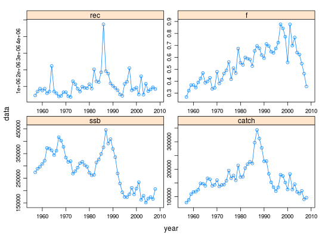

FLQuants(object, ...) # S4 method for ANY FLQuants(object, ...) # S4 method for FLComp FLQuants(object, ...) # S4 method for missing FLQuants(object, ...) # S4 method for list FLQuants(object) # S4 method for FLQuants FLQuants(object)
FLQuants is a list of FLQuant objects. It is very
similar to the standard list class. It implements a lock mechanism
that, when turned on, does not allow the user to increase or decrease the
object length. The elements of FLQuants must all be of class
FLQuant.
list.character.character.logical.A constructor method exists for this class that can take named arguments for any of the list elements.
# Compute various FLStock indicators data(ple4) fqs <- FLQuants(ssb=ssb(ple4), catch=catch(ple4), rec=rec(ple4), f=fbar(ple4)) summary(fqs)An object of class "FLQuants" Elements: ssb catch rec f Name: ssb dim : 1 52 1 1 1 1 quant: age units: t Min : 151508.1 1st Qu.: 210593.7 Mean : 286916.5 Median : 296973.2 3rd Qu.: 345178.7 Max : 445854.9 NAs : 0 % Name: catch dim : 1 52 1 1 1 1 quant: age units: t Min : 78422.95 1st Qu.: 126077.3 Mean : 165127 Median : 151975.4 3rd Qu.: 182754.8 Max : 342985.1 NAs : 0 % Name: rec dim : 1 52 1 1 1 1 quant: age units: 10^3 Min : 366632.6 1st Qu.: 678921.2 Mean : 1039494 Median : 864130.6 3rd Qu.: 1165278 Max : 4732214 NAs : 0 % Name: f dim : 1 52 1 1 1 1 quant: age units: f Min : 0.2685746 1st Qu.: 0.4152039 Mean : 0.5470289 Median : 0.5515977 3rd Qu.: 0.6586751 Max : 0.8758763 NAs : 0 %